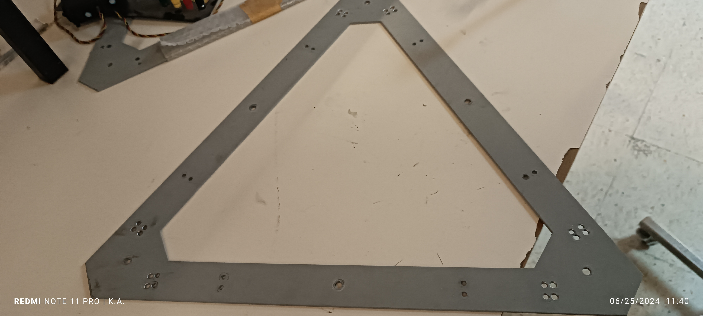
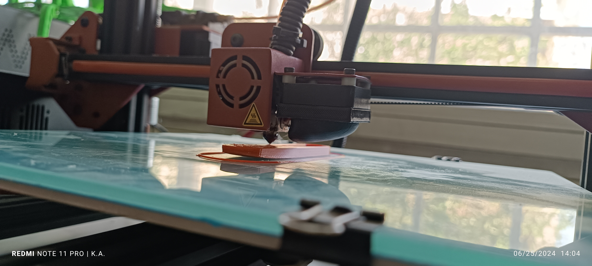
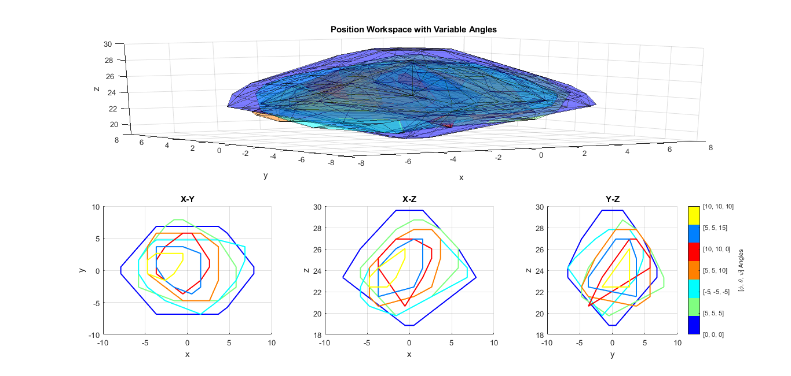
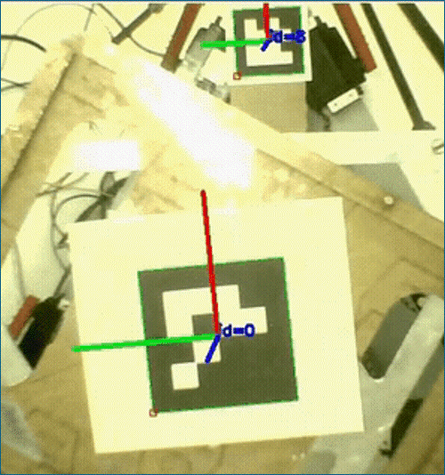
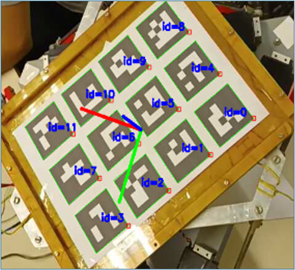
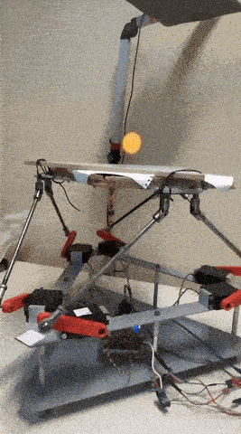

My graduation project at HIAST. I investigated how Neural Networks can learn to control a 6-DOF robot in real-time, compensating for mechanical imperfections that traditional PID controllers can't see.
Step 1: The Mechanical "Upgrade"
The standard platform wasn't enough. I needed more range. I modified the mechanics, installing powerful servos and designing longer arms to expand the workspace.
|

|

|
Of course, I didn't just guess—I validated the new workspace in MATLAB/Simulink first.

Step 2: Giving the Robot "Eyes"
To control the platform, I needed to know exactly where it was. My first attempt involved a standard webcam and two ArUco markers.

The Result? Chaos. The camera noise was too high, introducing jitter into the control loop. I needed a cleaner signal.
The Fix: I switched to a high-resolution mobile camera stream over WiFi and replaced the single markers with a full ArUco Board. Using the Perspective-N-Point (PnP) algorithm, I achieved stable, sub-millimeter pose estimation.
Lesson learned: Better data beats better algorithms every time.

Step 3: The "Fun" Part
With the sensors calibrated and the Neural Network trained to cancel out the motor backlash, it was time for the ultimate test.
Can a Neural Network play Ping Pong?
